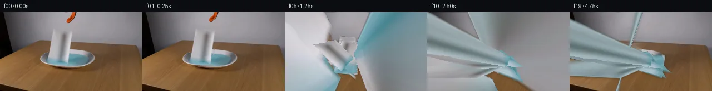

![首帧]()

Round 00
2026-11-05T04:49:34.198699+00:00像素候选变化代码 +315/−0inspection 更新
pixels 27938628c8f8c3fd · code 8479851b707f97cb
查看本轮 generate.py 真实 diff
--- previous/generate.py +++ current/generate.py @@ -0,0 +1,315 @@ +#!/usr/bin/env python3 +"""Generate the 20-frame paper-towel release using local pixel operations only.""" + +from pathlib import Path + +import cv2 +import numpy as np +from PIL import Image, ImageDraw, ImageFont + +from artifact_io import save + + +ROOT = Path(__file__).resolve().parent +W, H = 256, 144 +N = 20 + + +def alpha_over(dst, rgb, alpha): + """Composite an RGB layer and floating alpha mask onto uint8 RGB.""" + a = np.clip(alpha[..., None], 0.0, 1.0).astype(np.float32) + out = dst.astype(np.float32) * (1.0 - a) + rgb.astype(np.float32) * a + return np.clip(out + 0.5, 0, 255).astype(np.uint8) + + +def make_clean_plate(source): + """Locally reconstruct the wall/dish hidden by the initial towel and jaw.""" + mask = np.zeros((H, W), np.uint8) + towel_poly = np.array([[93, 28], [133, 28], [126, 97], [82, 97]], np.int32) + cv2.fillPoly(mask, [towel_poly], 255) + # The visible jaw is small, but a generous mask removes its antialias fringe. + jaw_poly = np.array([[115, 0], [140, 0], [139, 21], [120, 23], [115, 12]], np.int32) + cv2.fillPoly(mask, [jaw_poly], 255) + clean = cv2.inpaint(source, mask, 6, cv2.INPAINT_TELEA) + + # Across the broad wall portion, a row-wise interpolation is more faithful + # than propagating the bright towel inward. Blend it only above the table. + wall = clean.copy() + for y in range(25, 56): + xl = 89 - max(0, (y - 30) // 8) + xr = 136 + left = source[y, xl - 3].astype(np.float32) + right = source[y, xr + 3].astype(np.float32) + for x in range(xl, xr + 1): + q = (x - xl) / max(1, xr - xl) + wall[y, x] = np.clip(left * (1 - q) + right * q + 0.5, 0, 255) + # Feather the analytical wall fill into the inpainted result. + wm = np.zeros((H, W), np.uint8) + cv2.fillPoly(wm, [np.array([[91, 26], [136, 26], [134, 57], [86, 57]], np.int32)], 255) + wm = cv2.GaussianBlur(wm, (0, 0), 2.0).astype(np.float32) / 255.0 + clean = alpha_over(clean, wall, wm) + return clean + + +def extract_towel(source): + """Rectify the towel in frame 00 into a reusable RGBA texture.""" + tw, th = 48, 72 + src_quad = np.float32([[95, 30], [131, 31], [123, 95], [84, 95]]) + dst_quad = np.float32([[5, 0], [42, 0], [46, 71], [1, 71]]) + matrix = cv2.getPerspectiveTransform(src_quad, dst_quad) + texture = cv2.warpPerspective( + source, matrix, (tw, th), flags=cv2.INTER_CUBIC, + borderMode=cv2.BORDER_REFLECT_101, + ) + alpha_src = np.zeros((H, W), np.uint8) + cv2.fillPoly(alpha_src, [src_quad.astype(np.int32)], 255) + alpha_src = cv2.GaussianBlur(alpha_src, (0, 0), 0.7) + alpha = cv2.warpPerspective(alpha_src, matrix, (tw, th), flags=cv2.INTER_LINEAR) + # Fade the extreme normalized boundary by one pixel for natural antialiasing. + edge = np.zeros((th, tw), np.uint8) + cv2.fillPoly(edge, [dst_quad.astype(np.int32)], 255) + edge = cv2.GaussianBlur(edge, (0, 0), 0.55) + alpha = np.minimum(alpha, edge) + return texture, alpha.astype(np.float32) / 255.0 + + +def resample_path(points, count=10): + """Arc-length resample control points into evenly spaced centers.""" + p = np.asarray(points, np.float32) + seg = np.sqrt(((p[1:] - p[:-1]) ** 2).sum(axis=1)) + cumulative = np.r_[0.0, np.cumsum(seg)] + targets = np.linspace(0, cumulative[-1], count) + out = [] + for d in targets: + j = min(np.searchsorted(cumulative, d, side="right") - 1, len(p) - 2) + j = max(j, 0) + q = (d - cumulative[j]) / max(seg[j], 1e-5) + out.append(p[j] * (1.0 - q) + p[j + 1] * q) … diff truncated; 228 more lines …